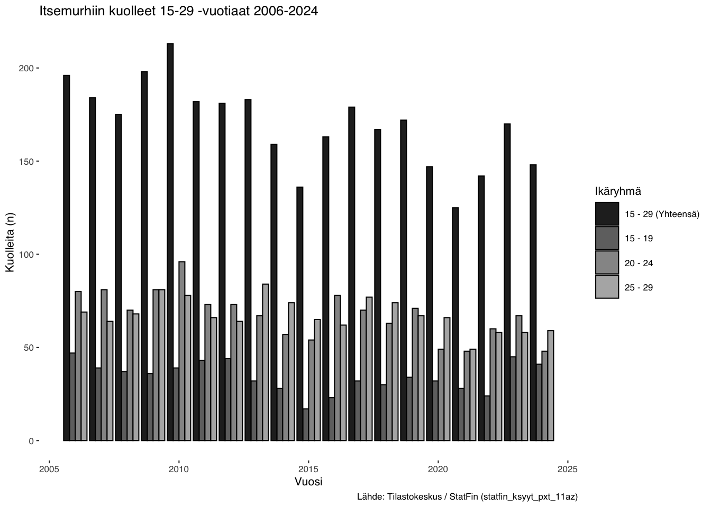
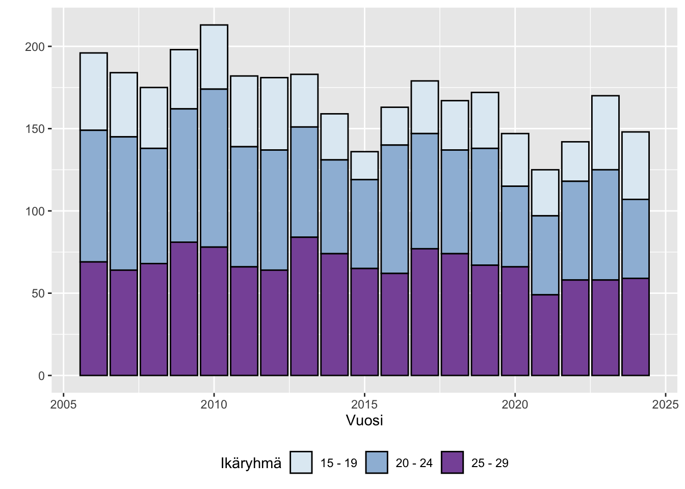
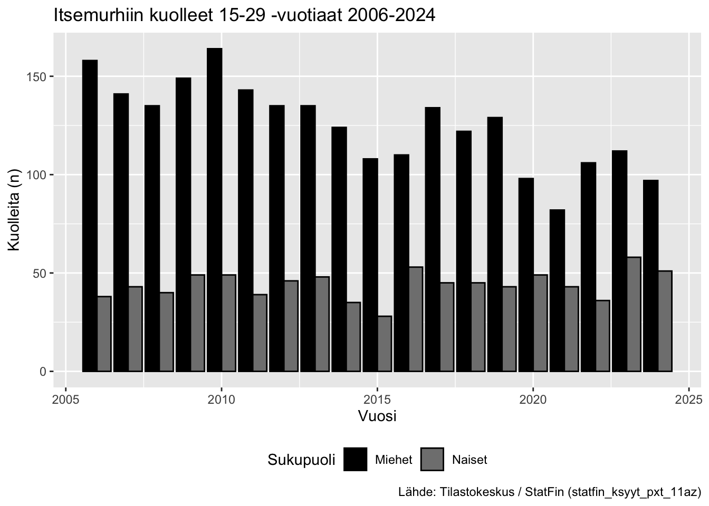
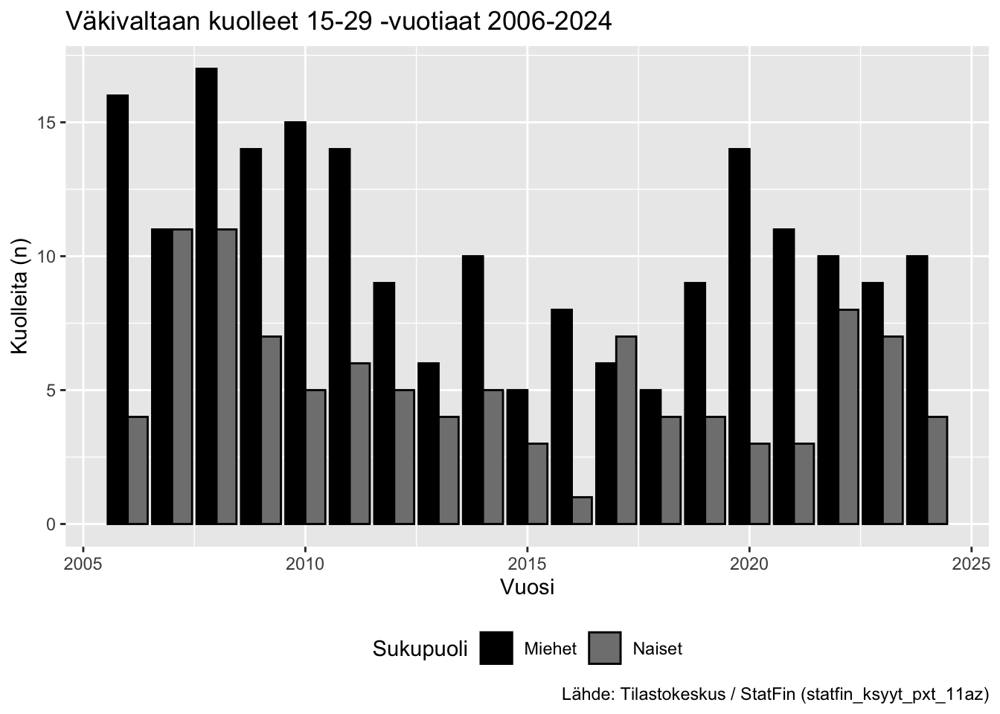
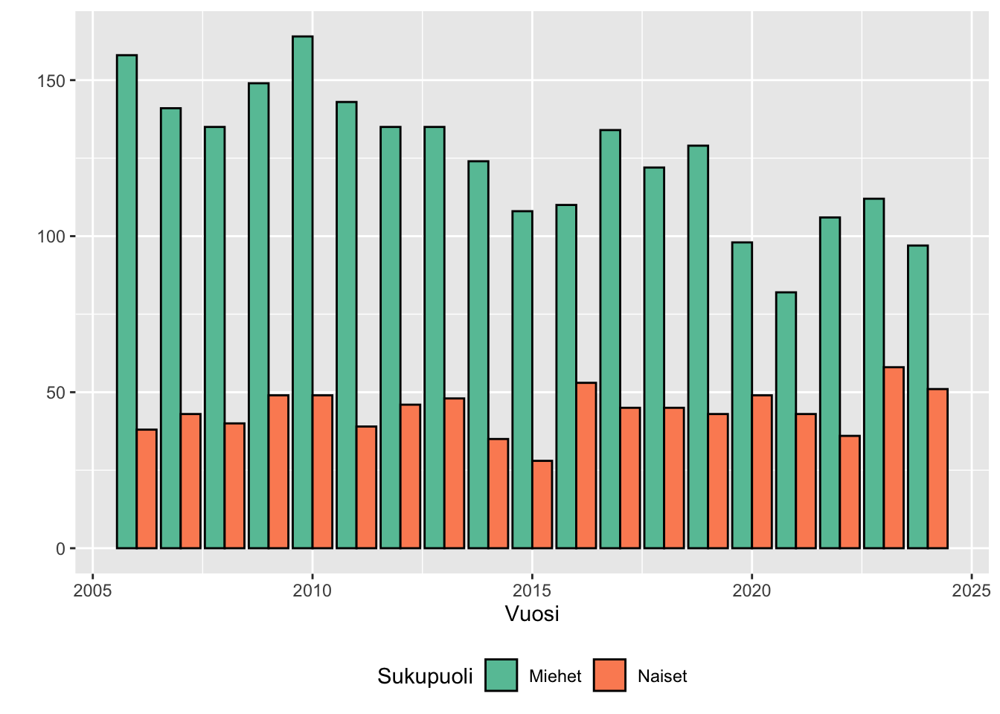
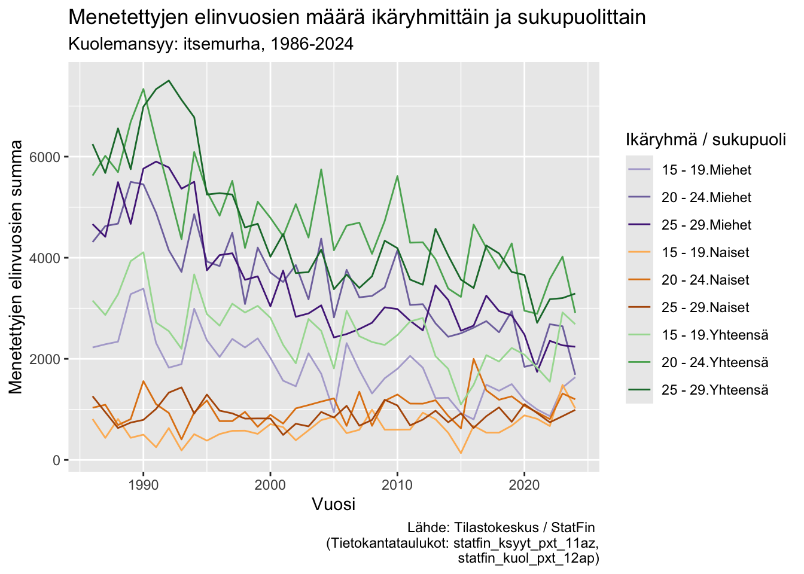

Code
library(pxweb)
library(ggplot2)
library(dplyr)
library(tidyr)
library(janitor)
library(patchwork)
library(xlsx)
library(gt)
library(knitr)
library(kableExtra)
library(RColorBrewer)Tilastotietojen lataamisessa Tilastokeskuksen StatFin-tietokannasta käytetään pxweb-pakettia. Paketti mahdollistaa hakujen tekemisen tekstipohjaisesta käyttöliittymästä, jolloin haut ovat tallennettavissa, helposti toistettavissa ja muokattavissa suoraan R:stä. pxweb-paketti toimii monien eri pxweb-tietokantojen kanssa eri maissa. pxweb-paketti on kehitetty osana rOpenGov -pakettiekosysteemiä.
Datan käsittelyyn (data wrangling) käytetään tidyverseen kuuluvia ggplot2-, dplyr- ja tidyr-paketteja.
Datasettien nimien siivoamiseen käytetään janitor-pakettia.
Kuvien yhdistämiseksi paneelikuviksi hyödynnetään patchwork-pakettia.
library(pxweb)
library(ggplot2)
library(dplyr)
library(tidyr)
library(janitor)
library(patchwork)
library(xlsx)
library(gt)
library(knitr)
library(kableExtra)
library(RColorBrewer)Asetus jolla säädellään sitä, haetaanko datat aina uudelleen pxweb-rajapinnasta vai luetaanko ne lokaalista kansiosta.
tallenna_datasetit <- lataa_datasetit_uudelleen <- FALSETaulukossa “12d9 – Huumeisiin kuolleet (B-luokitus) tilaston peruskuolemansyyn, iän ja sukupuolen mukaan, 2006-2023” (statfin_ksyyt_pxt_12d9) käytetään Yhteensä-lukua, joka sisältää seuraavat kategoriat: - Huumeiden käytön aiheuttamat riippuvuudet (F11-F12, F14-F16, F19) - Tapaturmaiset huumeiden aiheuttamat myrkytykset (X41, X42, X44/T400-9, T436) - Itsemurhat huumeilla (X61, X62, X64/T400-9, T436) - Huumeiden aiheuttamat myrkytykset, tahallisuus epäselvä (Y11, Y12, Y14/T400-9, T436)
Alaviitteissä mainitaan: “Luokitus perustuu Euroopan huumausaineiden ja niiden väärinkäytön seurantakeskuksen EMCDDA:n huumeluokitukseen Selection B. Luokkia on yhdistelty.”
pxweb_query_list <-
list("Tilaston peruskuolemansyy (aikasarjaluokitus)"=c("SSS", "50","51"),
"Ikä"=c("15-19","20-24","25-29"),
"Sukupuoli"=c("SSS","1","2"),
"Vuosi"=as.character(1969:2023),
"Tiedot"=c("ksyylkm"))
px_data <-
pxweb_get(url = "https://statfin.stat.fi/PXWeb/api/v1/fi/StatFin/ksyyt/statfin_ksyyt_pxt_11az.px",
query = pxweb_query_list)
statfin_ksyyt_pxt_11az <- as.data.frame(px_data,
column.name.type = "text",
variable.value.type = "text")
statfin_ksyyt_pxt_11az <- statfin_ksyyt_pxt_11az %>%
janitor::clean_names()
pxweb_query_list <-
list("Tilaston peruskuolemansyy (ICD-10, 3-merkkitaso)"=c("F11","F12", "F14",
"F15", "F16", "F19",
"X41", "X42", "X44",
"X61", "X62", "X64",
"Y11", "Y12", "Y14"),
"Ikä"=c("15-19","20-24","25-29"),
"Sukupuoli"=c("SSS","1","2"),
"Vuosi"=as.character(1998:2023),
"Tiedot"=c("ksyylkm"))
# Huumausainekuolemat ICD-10 -koodeilla, ilman itsemurhia
pxweb_query_list <-
list("Tilaston peruskuolemansyy (ICD-10, 3-merkkitaso)"=c("F11","F12", "F14",
"F15", "F16", "F19",
"X41", "X42", "X44",
"Y11", "Y12", "Y14"),
"Ikä"=c("15-19","20-24","25-29"),
"Sukupuoli"=c("SSS","1","2"),
"Vuosi"=as.character(1998:2023),
"Tiedot"=c("ksyylkm"))
px_data <-
pxweb_get(url = "https://statfin.stat.fi/PXWeb/api/v1/fi/StatFin/ksyyt/statfin_ksyyt_pxt_11be.px",
query = pxweb_query_list)
statfin_ksyyt_pxt_11be <- as.data.frame(px_data,
column.name.type = "text",
variable.value.type = "text")
statfin_ksyyt_pxt_11be <- statfin_ksyyt_pxt_11be %>%
janitor::clean_names()
pxweb_query_list <-
list("Huume (B-luokitus)"=c("SSS"),
"Ikä"=c("15-19","20-24","25-29"),
"Sukupuoli"=c("SSS","1","2"),
"Vuosi"=as.character(2006:2023),
"Tiedot"=c("ksyylkm15"))
px_data <-
pxweb_get(url = "https://statfin.stat.fi/PXWeb/api/v1/fi/StatFin/ksyyt/statfin_ksyyt_pxt_12d9.px",
query = pxweb_query_list)
statfin_ksyyt_pxt_12d9 <- as.data.frame(px_data,
column.name.type = "text",
variable.value.type = "text")
statfin_ksyyt_pxt_12d9 <- statfin_ksyyt_pxt_12d9 %>%
janitor::clean_names()
# Optional saving of datasets
if (tallenna_datasetit) {
saveRDS(object = statfin_ksyyt_pxt_11az, file = "prepared_data/statfin_ksyyt_pxt_11az.rds")
saveRDS(object = statfin_ksyyt_pxt_11be, file = "prepared_data/statfin_ksyyt_pxt_11be.rds")
saveRDS(object = statfin_ksyyt_pxt_12d9, file = "prepared_data/statfin_ksyyt_pxt_12d9.rds")
}statfin_ksyyt_pxt_11az <- readRDS("prepared_data/statfin_ksyyt_pxt_11az.rds")
statfin_ksyyt_pxt_11be <- readRDS("prepared_data/statfin_ksyyt_pxt_11be.rds")
statfin_ksyyt_pxt_12d9 <- readRDS("prepared_data/statfin_ksyyt_pxt_12d9.rds")Mikäli huumekuolemia haluttaisiin katsoa pidemmältä ajalta, tulisi käyttää muita tietokantataulukoita. Taulukossa “Kuolleet muuttujina Tilaston peruskuolemansyy (ICD-10, 3-merkkitaso), Ikä, Vuosi, Tiedot ja Sukupuoli” (statfin_ksyyt_pxt_11be) on mahdollista valmita em. ICD10-koodien perusteella tietoja vuodesta 1998 alkaen.
# PXWEB query: Huumausainekuolemat ICD-10 -koodeilla, ilman itsemurhia
pxweb_query_list <-
list("Tilaston peruskuolemansyy (ICD-10, 3-merkkitaso)"=c("F11","F12", "F14",
"F15", "F16", "F19",
"X41", "X42", "X44",
"Y11", "Y12", "Y14"),
"Ikä"=c("15-19","20-24","25-29"),
"Sukupuoli"=c("SSS","1","2"),
"Vuosi"=as.character(1998:2023),
"Tiedot"=c("ksyylkm"))
# PXWEB query
pxweb_query_list <-
list("Tilaston peruskuolemansyy (ICD-10, 3-merkkitaso)"=c("F11","F12", "F14",
"F15", "F16", "F19",
"X41", "X42", "X44",
"X61", "X62", "X64",
"Y11", "Y12", "Y14"),
"Ikä"=c("15-19","20-24","25-29"),
"Sukupuoli"=c("SSS","1","2"),
"Vuosi"=as.character(1998:2023),
"Tiedot"=c("ksyylkm"))
# Download data
px_data <-
pxweb_get(url = "https://statfin.stat.fi/PXWeb/api/v1/fi/StatFin/ksyyt/statfin_ksyyt_pxt_11be.px",
query = pxweb_query_list)
# Convert to data.frame, clean names and do summarizing
statfin_ksyyt_pxt_11be_summarized <- as.data.frame(px_data, column.name.type = "text", variable.value.type = "text") %>%
janitor::clean_names() %>%
tidyr::drop_na() %>%
group_by(ika, vuosi, sukupuoli) %>%
summarize(n_huumekuolema = sum(kuolleet)) %>%
ungroup()
if (tallenna_datasetit) {
saveRDS(object = statfin_ksyyt_pxt_11be_summarized, file = "prepared_data/statfin_ksyyt_pxt_11be_summarized.rds")
}Luvut ovat kuitenkin hieman erilaisia verrattuna taulukon statfin_ksyyt_pxt_12d9 Yhteensä-lukuihin. Esimerkiksi vuonna 2006 saadaan taulukosta statfin_ksyyt_pxt_11be yhteensä 55 huumekuolemaa, kun taulukossa statfin_ksyyt_pxt_12d9 niitä on 54. Erot ovat joinakin vuosina melko suuria; esimerkiksi vuonna 2010 25 - 29 -vuotiaiden ikäryhmässä erotus eri tilastointitapojen välillä on 11 kuolemantapausta ja vuonna 2018 -6 kuolemantapausta.
statfin_ksyyt_pxt_11be_summarized <- readRDS("prepared_data/statfin_ksyyt_pxt_11be_summarized.rds")
vertailu <- dplyr::left_join(statfin_ksyyt_pxt_11be_summarized, statfin_ksyyt_pxt_12d9, by = join_by(ika, vuosi, sukupuoli)) %>%
mutate(erotus = n_huumekuolema - huumeisiin_kuolleet_b_luokitus) %>%
filter(sukupuoli == "Yhteensä")
ggplot(vertailu, aes(x = as.integer(vuosi), y = erotus, group = ika)) +
geom_col(position = "dodge", aes(fill = ika), color = "black") +
labs(title = "Erot huumekuolemissa eri tilastotaulukoiden välillä",
caption = "Lähde: Tilastokeskus / StatFin (statfin_ksyyt_pxt_12d9, statfin_ksyyt_pxt_11be)",
subtitle = "Erotus: statfin_ksyyt_pxt_11be - statfin_ksyyt_pxt_12d9",
x = "Vuosi",
y = "Erotus") +
scale_fill_brewer(palette = "BuPu") +
theme(legend.position = "bottom")Tilastokeskuksen Keskiväkiluku-aineistosta saadaan tietoja vain vuoteen 1981 asti. Tästä johtuen myöhemmin tässä työkirjassa käytetään itse laskettua keskiväkilukua.
# PXWEB query
pxweb_query_list <-
list("Alue"="SSS",
"Vuosi"=as.character(1981:2024),
"Sukupuoli"=c("SSS","1","2"),
"Ikä"=paste0("0", 15:29),
"Tiedot"=c("keskiv"))
# Download data
px_data <- pxweb_get(url = "https://statfin.stat.fi/PXWeb/api/v1/fi/StatFin/vaerak/statfin_vaerak_pxt_11s1.px",
query = pxweb_query_list)
# Convert to data.frame
statfin_vaerak_pxt_11s1 <- as.data.frame(px_data,
column.name.type = "text",
variable.value.type = "text")
statfin_vaerak_pxt_11s1 <- statfin_vaerak_pxt_11s1 %>%
janitor::clean_names()
if (tallenna_datasetit) {
saveRDS(object = statfin_vaerak_pxt_11s1, file = "prepared_data/statfin_vaerak_pxt_11s1.rds")
}Tilastokeskuksen määritelmän mukaan:
Tietyn vuoden keskiväkiluku on kahden peräkkäisen vuoden väkilukujen keskiarvo. Kun tilastovuodelle lasketaan jotakin ilmiöta kuvaava suhdeluku, yleensä ko. ilmiön tapahtumien määrä suhteutetaan juuri tapahtumalle alttiina olevan väestön tai väestön osan keskiväkilukuun. Nämä väestöllisiä ilmiöitä kuvaavat luvut ilmoitetaan yleensä promilleina eli em. jakolaskun tulos kerrotaan tuhannella.
Eli vuoden 2024 keskiväkiluku saadaan laskemalla yhteen vuoden 2024 väkiluku ja vuoden 2023 väkiluku ja jakamalla tämä kahdella.
# PXWEB query
pxweb_query_list <-
list("Vuosi"=as.character(1865:2024),
"Sukupuoli"=c("SSS"),
"Ikä"=c("15-19", "20-24", "25-29"),
"Tiedot"=c("vaesto"))
# Download data
px_data <-
pxweb_get(url = "https://statfin.stat.fi/PXWeb/api/v1/fi/StatFin/vaerak/statfin_vaerak_pxt_11rc.px",
query = pxweb_query_list)
# Convert to data.frame
statfin_vaerak_pxt_11rc <- as.data.frame(px_data,
column.name.type = "text",
variable.value.type = "text")
statfin_vaerak_pxt_11rc <- statfin_vaerak_pxt_11rc %>%
janitor::clean_names()
if (tallenna_datasetit) {
saveRDS(object = statfin_vaerak_pxt_11rc, file = "prepared_data/statfin_vaerak_pxt_11rc.rds")
}Muodostetaan 15-29 -vuotiaiden ryhmä. Hyödynnetään dplyr-paketista löytyviä window function -funktioita eli lag-funktiota, saadaan valittua jokaiselle vuodelle sitä seuraavan vuoden luku (taulukko on järjestetty nousevaan järjestykseen eli ensimmäisenä on vanhin vuosi ja viimeisenä uusin vuosi, 2024).
statfin_vaerak_pxt_11rc <- readRDS("prepared_data/statfin_vaerak_pxt_11rc.rds")
itse_laskettu_keskivakiluku <- statfin_vaerak_pxt_11rc %>%
group_by(vuosi) %>%
summarize(vakiluku_15_29 = sum(vaesto_31_12)) %>%
mutate(keskivakiluku = (vakiluku_15_29 + lag(vakiluku_15_29)) / 2) %>%
ungroup()Tässä haetaan Tilastokeskuksen tietokannasta elinajanodote vuosina 1-v -tarkkuudella, lasketaan keskimääräinen elinajanodote ikäryhmittäin ilman painokerrointa. Esim. vuonna 1986 15-19 -vuotiaiden miesten keskimääräinen elinajanodote olisi
\[ \frac{56.2 + 55.23 + 54.26 + 53.31 + 52.38}{5} = 54.3 \]
Elinajanodotteet vuosina ovat järjestyksessä pienimmästä iästä suurimpaan, eli vuonna 1986 15-vuotiaiden elinajanodote oli 56.2 vuotta, 16-vuotiaiden 55.23 vuotta jne.
# PXWEB query
pxweb_query_list <-
list("Vuosi"=c("1986","1987","1988","1989","1990","1991","1992","1993","1994","1995","1996","1997","1998","1999","2000","2001","2002","2003","2004","2005","2006","2007","2008","2009","2010","2011","2012","2013","2014","2015","2016","2017","2018","2019","2020","2021","2022","2023","2024"),
"Sukupuoli"=c("SSS","1","2"),
"Ikä"=c("015","016","017","018","019","020","021","022","023","024","025","026","027","028","029"),
"Tiedot"=c("eodote"))
# Download data
px_data <-
pxweb_get(url = "https://statfin.stat.fi/PXWeb/api/v1/fi/StatFin/kuol/statfin_kuol_pxt_12ap.px",
query = pxweb_query_list)
# Convert to data.frame
px_data_frame <- as.data.frame(px_data, column.name.type = "text", variable.value.type = "text")
kuolleet_12ap <- px_data_frame %>%
janitor::clean_names() %>%
mutate(ikaluokka = case_when(
ika %in% c(as.character(15:19)) ~ "15 - 19",
ika %in% c(as.character(20:24)) ~ "20 - 24",
ika %in% c(as.character(25:29)) ~ "25 - 29",
.default = as.character(ika)
)) %>%
group_by(ikaluokka, sukupuoli, vuosi) %>%
summarize(elinajanodote_vuosia_mean = mean(elinajanodote_vuosia)) %>%
ungroup()
if (tallenna_datasetit) {
saveRDS(object = kuolleet_12ap, file = "prepared_data/statfin_kuol_pxt_12ap_summarized.rds")
}janitor-paketin clean_names()-funktiolla muutetaan suomenkieliset muuttujanimet helpommin käsiteltäviksi ASCII-nimiksi, joissa poistetaan isot kirjaimet, välilyönnit korvataan _-merkillä, ääkköset poistetaan ym.
Muodostetaan uusi muuttuja “kuolemansyy” jota voidaan käyttää eri kuolemansyiden lukujen ryhmittelyyn visualisoinneissa.
statfin_ksyyt_pxt_11az <- readRDS("prepared_data/statfin_ksyyt_pxt_11az.rds")
statfin_ksyyt_pxt_12d9 <- readRDS("prepared_data/statfin_ksyyt_pxt_12d9.rds")
itsemurhat_vakivalta <- statfin_ksyyt_pxt_11az %>%
# filter(sukupuoli %in% c("Miehet", "Naiset"), as.numeric(vuosi) >= 2006) %>%
# filter(!(tilaston_peruskuolemansyy_aikasarjaluokitus %in% "00-54 Yhteensä")) %>%
group_by(tilaston_peruskuolemansyy_aikasarjaluokitus, vuosi, ika, sukupuoli) %>%
summarize(kuolleet_06_23 = sum(kuolleet)) %>%
mutate(kuolemansyy = case_when(
tilaston_peruskuolemansyy_aikasarjaluokitus == "50 Itsemurhat (X60-X84, Y870)" ~ "itsemurha",
tilaston_peruskuolemansyy_aikasarjaluokitus == "51 Murha, tappo tai muu tahallinen pahoinpitely (X85-Y09, Y871)" ~ "vakivalta",
.default = "muut"
)) %>%
ungroup() %>%
select(vuosi, ika, sukupuoli, kuolleet_06_23, kuolemansyy)
statfin_ksyyt_pxt_12d9 <- statfin_ksyyt_pxt_12d9 %>%
janitor::clean_names()
huumekuolemat <- statfin_ksyyt_pxt_12d9 %>%
# filter(sukupuoli %in% c("Miehet", "Naiset"), as.numeric(vuosi) >= 2006) %>%
group_by(vuosi, ika, sukupuoli) %>%
summarize(kuolleet_06_23 = sum(huumeisiin_kuolleet_b_luokitus, na.rm = TRUE)) %>%
ungroup() %>%
mutate(kuolemansyy = "huumekuolema")itsemurhat_ikaryhmat <- itsemurhat_vakivalta %>%
filter(as.numeric(vuosi) >= 2006) %>%
filter(kuolemansyy == "itsemurha") %>%
filter(sukupuoli == "Yhteensä")
vakivalta_ikaryhmat <- itsemurhat_vakivalta %>%
filter(as.numeric(vuosi) >= 2006) %>%
filter(kuolemansyy == "vakivalta") %>%
filter(sukupuoli == "Yhteensä")
huumekuolemat_ikaryhmat <- huumekuolemat %>%
filter(as.numeric(vuosi) >= 2006) %>%
filter(sukupuoli == "Yhteensä")
itsemurhat_ikaryhmat_total <- itsemurhat_ikaryhmat %>%
group_by(vuosi, sukupuoli, kuolemansyy) %>%
summarize(kuolleet_06_23 = sum(kuolleet_06_23)) %>%
mutate(ika = "15 - 29 (Yhteensä)") %>%
select(vuosi, ika, sukupuoli, kuolleet_06_23, kuolemansyy)
vakivalta_ikaryhmat_total <- vakivalta_ikaryhmat %>%
group_by(vuosi, sukupuoli, kuolemansyy) %>%
summarize(kuolleet_06_23 = sum(kuolleet_06_23)) %>%
mutate(ika = "15 - 29 (Yhteensä)") %>%
select(vuosi, ika, sukupuoli, kuolleet_06_23, kuolemansyy)
huumekuolemat_ikaryhmat_total <- huumekuolemat_ikaryhmat %>%
group_by(vuosi, sukupuoli, kuolemansyy) %>%
summarize(kuolleet_06_23 = sum(kuolleet_06_23)) %>%
mutate(ika = "15 - 29 (Yhteensä)") %>%
select(vuosi, ika, sukupuoli, kuolleet_06_23, kuolemansyy)Muutetaan ika-muuttujan character-arvot faktoreiksi, jolloin voidaan määritellä manuaalisesti niiden järjestys. Normaalisti muuttujat visualisoitaisiin aakkosjärjestyksessä (alfanumeerisessa järjestyksessä), jolloin numerot tulisivat ennen tekstimuuttujia. Haluamme kuitenkin tässä (?), että “Yhteensä” on ennen numeroita.
itsemurhat_ikaryhmat_2 <- rbind(itsemurhat_ikaryhmat, itsemurhat_ikaryhmat_total) %>%
mutate(ika = factor(ika, levels=c("15 - 29 (Yhteensä)", "15 - 19", "20 - 24", "25 - 29")))
vakivalta_ikaryhmat_2 <- rbind(vakivalta_ikaryhmat, vakivalta_ikaryhmat_total) %>%
mutate(ika = factor(ika, levels=c("15 - 29 (Yhteensä)", "15 - 19", "20 - 24", "25 - 29")))
huumekuolemat_ikaryhmat_2 <- rbind(huumekuolemat_ikaryhmat, huumekuolemat_ikaryhmat_total) %>%
mutate(ika = factor(ika, levels=c("15 - 29 (Yhteensä)", "15 - 19", "20 - 24", "25 - 29")))Tässä visualisoinnissa esitetään erikseen eri kuolinsyiden Yhteensä-määrä ja erilliset kuolinsyyt omina palkkeinaan.
Hyödyntämällä patchwork-kirjastoa saamme yhdistettyä useita kuvioita yhteen.
ggplot() +
# geom_bar(data = itsemurhat_ikaryhmat_total, aes(y = total, x=as.numeric(vuosi)), stat="identity", position="dodge") +
geom_bar(data = itsemurhat_ikaryhmat_2, aes(fill = ika, y=kuolleet_06_23, x=as.numeric(vuosi)), position="dodge", stat="identity", color = "black") +
labs(title = "Itsemurhiin kuolleet 15-29 -vuotiaat 2006-2023",
caption = "Lähde: Tilastokeskus / StatFin (statfin_ksyyt_pxt_11az)",
x = "Vuosi",
y = "Kuolleita (n)",
fill = "Ikäryhmä") +
scale_fill_grey(start = 0.7, end = 0.15) +
theme(legend.position = "bottom")
ggplot(vakivalta_ikaryhmat_2, aes(fill = ika, y=kuolleet_06_23, x=as.numeric(vuosi))) +
geom_bar(position="dodge", stat="identity", color = "black") +
labs(title = "Väkivaltaan kuolleet 15-29 -vuotiaat 2006-2023",
caption = "Lähde: Tilastokeskus / StatFin (statfin_ksyyt_pxt_11az)",
x = "Vuosi",
y = "Kuolleita (n)",
fill = "Ikäryhmä") +
scale_fill_grey(start = 0.7, end = 0.15) +
theme(legend.position = "bottom")
ggplot(huumekuolemat_ikaryhmat_2, aes(fill = ika, y=kuolleet_06_23, x=as.numeric(vuosi))) +
geom_bar(position="dodge", stat="identity", color = "black") +
labs(title = "Huumeisiin kuolleet 15-29 -vuotiaat 2006-2023",
caption = "Lähde: Tilastokeskus / StatFin (statfin_ksyyt_pxt_12d9)",
x = "Vuosi",
y = "Kuolleita (n)",
fill = "Ikäryhmä") +
scale_fill_grey(start = 0.7, end = 0.15) +
theme(legend.position = "bottom")Hyödyntämällä patchwork-kirjastoa saamme yhdistettyä useita kuvioita yhteen.
p1 <- ggplot() +
geom_bar(data = itsemurhat_ikaryhmat_2, aes(fill = ika, y=kuolleet_06_23, x=as.numeric(vuosi)), position="dodge", stat="identity", color = "black") +
ylim(0, 200) +
scale_fill_grey(start = 0.7, end = 0.15) +
labs(title = "Itsemurhat", x = "Vuosi", y = "Kuolleet (n)", fill = "Ikäryhmä")
p2 <- ggplot(vakivalta_ikaryhmat_2, aes(fill = ika, y=kuolleet_06_23, x=as.numeric(vuosi))) +
geom_bar(position="dodge", stat="identity", color = "black") +
ylim(0, 200) +
scale_fill_grey(start = 0.7, end = 0.15) +
labs(title = "Väkivalta", x = "Vuosi", y = "Kuolleet (n)", fill = "Ikäryhmä")
p3 <- ggplot(huumekuolemat_ikaryhmat_2, aes(fill = ika, y=kuolleet_06_23, x=as.numeric(vuosi))) +
geom_bar(position="dodge", stat="identity", color = "black") +
ylim(0, 200) +
scale_fill_grey(start = 0.7, end = 0.15) +
labs(title = "Huumeet", x = "Vuosi", y = "Kuolleet (n)", fill = "Ikäryhmä")
p1 + p2 + p3 + plot_layout(ncol = 1, guides = "collect", axis_titles = "collect") & theme(legend.position = "right")
Tässä visualisoinnissa YD-kuolemien kokonaismäärä näkyy pinoamalla erilliset kuolinsyyt yhdeksi palkiksi.
“Kuviot julkaistaan printtilehdessä mustavalkoisena, mikä tulee ottaa huomioon kuvioita suunniteltaessa.”
ggplot() +
# geom_bar(data = itsemurhat_ikaryhmat_total, aes(y = total, x=as.numeric(vuosi)), stat="identity", position="dodge") +
geom_bar(data = itsemurhat_ikaryhmat, aes(fill = ika, y=kuolleet_06_23, x=as.numeric(vuosi)), position="stack", stat="identity", color = "black") +
labs(title = "Itsemurhiin kuolleet 15-29 -vuotiaat 2006-2023",
caption = "Lähde: Tilastokeskus / StatFin (statfin_ksyyt_pxt_11az)",
x = "Vuosi",
y = "Kuolleita (n)",
fill = "Ikäryhmä") +
scale_fill_grey(start = 0.75, end = 0.25) +
theme(legend.position = "bottom")
ggplot(vakivalta_ikaryhmat, aes(fill = ika, y=kuolleet_06_23, x=as.numeric(vuosi))) +
geom_bar(position="stack", stat="identity", color = "black") +
labs(title = "Väkivaltaan kuolleet 15-29 -vuotiaat 2006-2023",
caption = "Lähde: Tilastokeskus / StatFin (statfin_ksyyt_pxt_11az)",
x = "Vuosi",
y = "Kuolleita (n)",
fill = "Ikäryhmä") +
scale_fill_grey(start = 0.75, end = 0.25) +
theme(legend.position = "bottom")
ggplot(huumekuolemat_ikaryhmat, aes(fill = ika, y=kuolleet_06_23, x=as.numeric(vuosi))) +
geom_bar(position="stack", stat="identity", color = "black") +
labs(title = "Huumeisiin kuolleet 15-29 -vuotiaat 2006-2023",
caption = "Lähde: Tilastokeskus / StatFin (statfin_ksyyt_pxt_12d9)",
x = "Vuosi",
y = "Kuolleita (n)",
fill = "Ikäryhmä") +
scale_fill_grey(start = 0.75, end = 0.25) +
theme(legend.position = "bottom")“Kuviossa mahdollisesti käytetyt värit tulevat näkyviin artikkelin nettiversiossa.” Ikäryhmien visualisointiin käytetään tässä väripalettia BuPu, joka on colorblind safe, sequential (ks. lisätietoja ja lisää paletteja: colorbrewer2.org).
ggplot() +
geom_bar(data = itsemurhat_ikaryhmat, aes(fill = ika, y=kuolleet_06_23, x=as.numeric(vuosi)), position="stack", stat="identity", color = "black") +
labs(x = "Vuosi",
y = "",
fill = "Ikäryhmä") +
scale_fill_brewer(palette = "BuPu") +
theme(legend.position = "bottom")
Kuvateksti: Itsemurhiin kuolleiden 15-29 -vuotiaiden määrä ikäryhmittäin vuosina 2006-2023. Lähde: Tilastokeskus, kuolemansyyt (Tietokantataulukot: 11az – Kuolleet tilaston peruskuolemansyyn (aikasarjaluokitus), iän ja sukupuolen mukaan, 1969-2023)
ggplot(vakivalta_ikaryhmat, aes(fill = ika, y=kuolleet_06_23, x=as.numeric(vuosi))) +
geom_bar(position="stack", stat="identity", colour = "black") +
labs(x = "Vuosi",
y = "",
fill = "Ikäryhmä") +
scale_fill_brewer(palette = "BuPu") +
theme(legend.position = "bottom")
Kuvateksti: Väkivaltaan kuolleiden 15-29 -vuotiaiden määrä ikäryhmittäin vuosina 2006-2023. Lähde: Tilastokeskus, kuolemansyyt (Tietokantataulukot: 11az – Kuolleet tilaston peruskuolemansyyn (aikasarjaluokitus), iän ja sukupuolen mukaan, 1969-2023)
ggplot(huumekuolemat_ikaryhmat, aes(fill = ika, y=kuolleet_06_23, x=as.numeric(vuosi))) +
geom_bar(position="stack", stat="identity", colour = "black") +
labs(x = "Vuosi",
y = "",
fill = "Ikäryhmä") +
scale_fill_brewer(palette = "BuPu") +
theme(legend.position = "bottom")
Kuvateksti: Huumeisiin kuolleiden 15-29 -vuotiaiden määrä ikäryhmittäin vuosina 2006-2023. Lähde: Tilastokeskus, kuolemansyyt (Tietokantataulukot: 12d9 – Huumeisiin kuolleet (B-luokitus) tilaston peruskuolemansyyn, iän ja sukupuolen mukaan, 2006-2023)
itsemurhat_sp <- itsemurhat_vakivalta %>%
filter(kuolemansyy == "itsemurha") %>%
filter(as.numeric(vuosi) >= 2006) %>%
filter(sukupuoli %in% c("Miehet", "Naiset")) %>%
group_by(vuosi, sukupuoli) %>%
summarize(kuolleet_06_23_sp = sum(kuolleet_06_23, na.rm = TRUE)) %>%
ungroup()
vakivalta_sp <- itsemurhat_vakivalta %>%
filter(kuolemansyy == "vakivalta") %>%
filter(as.numeric(vuosi) >= 2006) %>%
filter(sukupuoli %in% c("Miehet", "Naiset")) %>%
group_by(vuosi, sukupuoli) %>%
summarize(kuolleet_06_23_sp = sum(kuolleet_06_23, na.rm = TRUE)) %>%
ungroup()
huumekuolemat_sp <- huumekuolemat %>%
filter(as.numeric(vuosi) >= 2006) %>%
filter(sukupuoli %in% c("Miehet", "Naiset")) %>%
group_by(vuosi, sukupuoli) %>%
summarize(kuolleet_06_23_sp = sum(kuolleet_06_23, na.rm = TRUE)) %>%
ungroup()Mustavalkoiset kuviot, joissa on mukana title, caption ja y-akselin label:
ggplot(itsemurhat_sp, aes(fill = sukupuoli, y=kuolleet_06_23_sp, x=as.numeric(vuosi))) +
geom_bar(position="dodge", stat="identity", color = "black") +
labs(title = "Itsemurhiin kuolleet 15-29 -vuotiaat 2006-2023",
caption = "Lähde: Tilastokeskus / StatFin (statfin_ksyyt_pxt_11az)",
x = "Vuosi",
y = "Kuolleita (n)",
fill = "Sukupuoli") +
scale_fill_grey(start = 0, end = 0.5) +
theme(legend.position = "bottom")
ggplot(vakivalta_sp, aes(fill = sukupuoli, y=kuolleet_06_23_sp, x=as.numeric(vuosi))) +
geom_bar(position="dodge", stat="identity", color = "black") +
labs(title = "Väkivaltaan kuolleet 15-29 -vuotiaat 2006-2023",
caption = "Lähde: Tilastokeskus / StatFin (statfin_ksyyt_pxt_11az)",
x = "Vuosi",
y = "Kuolleita (n)",
fill = "Sukupuoli") +
scale_fill_grey(start = 0, end = 0.5) +
theme(legend.position = "bottom")
ggplot(huumekuolemat_sp, aes(fill = sukupuoli, y=kuolleet_06_23_sp, x=as.numeric(vuosi))) +
geom_bar(position="dodge", stat="identity", color = "black") +
labs(title = "Huumeisiin kuolleet 15-29 -vuotiaat 2006-2023",
caption = "Lähde: Tilastokeskus / StatFin (statfin_ksyyt_pxt_12d9)",
x = "Vuosi",
y = "Kuolleita (n)",
fill = "Sukupuoli") +
scale_fill_grey(start = 0, end = 0.5) +
theme(legend.position = "bottom")
Värilliset kuvat. Sukupuolen visualisointiin käytetään tässä väripalettia Set2 joka on colorblind safe, qualitative (ks. lisätietoja ja lisää paletteja: colorbrewer2.org).
ggplot(itsemurhat_sp, aes(fill = sukupuoli, y=kuolleet_06_23_sp, x=as.numeric(vuosi))) +
geom_bar(position="dodge", stat="identity", color = "black") +
labs(x = "Vuosi",
y = "",
fill = "Sukupuoli") +
scale_fill_brewer(palette = "Set2") +
theme(legend.position = "bottom")
Kuvateksti: Itsemurhiin kuolleiden 15-29 -vuotiaiden miesten ja naisten määrä vuosina 2006-2023. Lähde: Tilastokeskus, kuolemansyyt (Tietokantataulukot: 11az – Kuolleet tilaston peruskuolemansyyn (aikasarjaluokitus), iän ja sukupuolen mukaan, 1969-2023)
ggplot(vakivalta_sp, aes(fill = sukupuoli, y=kuolleet_06_23_sp, x=as.numeric(vuosi))) +
geom_bar(position="dodge", stat="identity", color = "black") +
labs(x = "Vuosi",
y = "",
fill = "Sukupuoli") +
scale_fill_brewer(palette = "Set2") +
theme(legend.position = "bottom")Kuvateksti: Väkivaltaan kuolleiden 15-29 -vuotiaiden miesten ja naisten määrä vuosina 2006-2023. Lähde: Tilastokeskus, kuolemansyyt (Tietokantataulukot: 11az – Kuolleet tilaston peruskuolemansyyn (aikasarjaluokitus), iän ja sukupuolen mukaan, 1969-2023)
ggplot(huumekuolemat_sp, aes(fill = sukupuoli, y=kuolleet_06_23_sp, x=as.numeric(vuosi))) +
geom_bar(position="dodge", stat="identity", color = "black") +
labs(x = "Vuosi",
y = "",
fill = "Sukupuoli") +
scale_fill_brewer(palette = "Set2") +
theme(legend.position = "bottom")
Kuvateksti: Huumeisiin kuolleiden 15-29 -vuotiaiden miesten ja naisten määrä vuosina 2006-2023. Lähde: Tilastokeskus, kuolemansyyt (Tietokantataulukot: 12d9 – Huumeisiin kuolleet (B-luokitus) tilaston peruskuolemansyyn, iän ja sukupuolen mukaan, 2006-2023)
itsemurhat_yht <- itsemurhat_vakivalta %>%
filter(kuolemansyy == "itsemurha") %>%
filter(as.numeric(vuosi) >= 2006) %>%
filter(sukupuoli %in% c("Miehet", "Naiset")) %>%
group_by(vuosi, sukupuoli, kuolemansyy) %>%
summarize(kuolleet_06_23_yht = sum(kuolleet_06_23, na.rm = TRUE)) %>%
ungroup()
vakivalta_yht <- itsemurhat_vakivalta %>%
filter(kuolemansyy == "vakivalta") %>%
filter(as.numeric(vuosi) >= 2006) %>%
filter(sukupuoli %in% c("Miehet", "Naiset")) %>%
group_by(vuosi, sukupuoli, kuolemansyy) %>%
summarize(kuolleet_06_23_yht = sum(kuolleet_06_23, na.rm = TRUE)) %>%
ungroup()
huumekuolemat_yht <- huumekuolemat %>%
filter(sukupuoli %in% c("Miehet", "Naiset")) %>%
filter(as.numeric(vuosi) >= 2006) %>%
group_by(vuosi, sukupuoli, kuolemansyy) %>%
summarize(kuolleet_06_23_yht = sum(kuolleet_06_23, na.rm = TRUE)) %>%
ungroup()
yd_kuolemat_kaikki <- rbind(itsemurhat_yht, huumekuolemat_yht, vakivalta_yht) %>%
tidyr::pivot_wider(names_from = c(kuolemansyy, sukupuoli),
values_from = kuolleet_06_23_yht) %>%
rowwise() %>%
mutate(yht_m = sum(itsemurha_Miehet, huumekuolema_Miehet, vakivalta_Miehet),
yht_n = sum(itsemurha_Naiset, huumekuolema_Naiset, vakivalta_Naiset))yd_kuolemat_kaikki %>%
rename(itsem_m = "itsemurha_Miehet", itsem_n = "itsemurha_Naiset",
vakiv_m = "vakivalta_Miehet", vakiv_n = "vakivalta_Naiset",
huume_m = "huumekuolema_Miehet", huume_n = "huumekuolema_Naiset")# A tibble: 18 × 9
# Rowwise:
vuosi itsem_m itsem_n huume_m huume_n vakiv_m vakiv_n yht_m yht_n
<chr> <dbl> <dbl> <dbl> <dbl> <dbl> <dbl> <dbl> <dbl>
1 2006 158 38 47 7 16 4 221 49
2 2007 141 43 47 9 11 11 199 63
3 2008 135 40 45 11 17 11 197 62
4 2009 149 49 38 16 14 7 201 72
5 2010 164 49 38 12 15 5 217 66
6 2011 143 39 60 15 14 6 217 60
7 2012 135 46 52 14 9 5 196 65
8 2013 135 48 44 15 6 4 185 67
9 2014 124 35 46 9 10 5 180 49
10 2015 108 28 35 5 5 3 148 36
11 2016 110 53 50 8 8 1 168 62
12 2017 134 45 48 12 6 7 188 64
13 2018 122 45 72 23 5 4 199 72
14 2019 129 43 65 26 9 4 203 73
15 2020 98 49 98 19 14 3 210 71
16 2021 82 43 77 23 11 3 170 69
17 2022 106 36 61 21 10 8 177 65
18 2023 112 58 101 23 9 7 222 88itsemurhat_yht <- itsemurhat_vakivalta %>%
filter(kuolemansyy == "itsemurha") %>%
filter(as.numeric(vuosi) >= 2006)
vakivalta_yht <- itsemurhat_vakivalta %>%
filter(kuolemansyy == "vakivalta") %>%
filter(as.numeric(vuosi) >= 2006)
huumekuolemat_yht <- huumekuolemat %>%
filter(as.numeric(vuosi) >= 2006)
yd_kuolemat_kaikki_vuosi <- rbind(itsemurhat_yht, huumekuolemat_yht, vakivalta_yht) %>%
tidyr::pivot_wider(names_from = vuosi, names_prefix = "v_",
values_from = kuolleet_06_23)Taulukon muoto on sellainen, että sen valmiiksi tekeminen on helpointa Excelissä. Tämä code chunk on laitettu eval = FALSE koska emme halua, että tämän dokumentin jokainen renderöinti ylikirjoittaa käsin tehdyt muutokset!
if (FALSE) {
write.xlsx(yd_kuolemat_kaikki_vuosi, "yd_kuolemat_kaikki_vuosi.xlsx")
}Tässä välissä muokkauksia on tehty Excel-tiedostossa, jonka jälkeen se luetaan taas R:ään. Fontti on asetettu seuraavissa taulukoissa pieneksi jotta ne mahtuisivat paremmin vaakasuunnassa pdf-tiedostoon, mutta selkeyden vuoksi ei kuitenkaan ihan niin pieneksi, että ne mahtuisivat pystysuunnassa olevalle A4-paperille.
user_font_size <- 7
yd_kuolemat_muokattu_itsemurhat <- xlsx::read.xlsx("yd_kuolemat_kaikki_vuosi.xlsx", 1) %>%
filter(sukupuoli %in% c("Yhteensä", "Miehet (%)", "Naiset (%)")) %>%
select(ika, sukupuoli, starts_with("v_"))
yd_kuolemat_muokattu_huumekuolemat <- xlsx::read.xlsx("yd_kuolemat_kaikki_vuosi.xlsx", 2) %>%
filter(sukupuoli %in% c("Yhteensä", "Miehet (%)", "Naiset (%)")) %>%
select(ika, sukupuoli, starts_with("v_")) %>%
mutate(across(starts_with("v_"), as.numeric))
yd_kuolemat_muokattu_vakivalta <- xlsx::read.xlsx("yd_kuolemat_kaikki_vuosi.xlsx", 3) %>%
filter(sukupuoli %in% c("Yhteensä", "Miehet (%)", "Naiset (%)")) %>%
select(ika, sukupuoli, starts_with("v_")) %>%
mutate(across(starts_with("v_"), as.numeric))
yd_kuolemat_muokattu_yhteensa <- xlsx::read.xlsx("yd_kuolemat_kaikki_vuosi.xlsx", 4) %>%
filter(sukupuoli %in% c("Yhteensä", "Miehet (%)", "Naiset (%)")) %>%
select(ika, sukupuoli, starts_with("v_")) %>%
mutate(across(starts_with("v_"), as.numeric))
knitr::kable(yd_kuolemat_muokattu_itsemurhat, format = "pipe", caption = "Itsemurhat", row.names = FALSE, digits = 1) %>% kableExtra::kable_styling(font_size = user_font_size)| ika | sukupuoli | v_2006 | v_2007 | v_2008 | v_2009 | v_2010 | v_2011 | v_2012 | v_2013 | v_2014 | v_2015 | v_2016 | v_2017 | v_2018 | v_2019 | v_2020 | v_2021 | v_2022 | v_2023 |
|---|---|---|---|---|---|---|---|---|---|---|---|---|---|---|---|---|---|---|---|
| 15 - 19 | Yhteensä | 47.0 | 39.0 | 37.0 | 36.0 | 39.0 | 43.0 | 44.0 | 32.0 | 28.0 | 17.0 | 23.0 | 32.0 | 30.0 | 34.0 | 32.0 | 28.0 | 24.0 | 45.0 |
| 15 - 19 | Miehet (%) | 0.8 | 0.8 | 0.6 | 0.8 | 0.8 | 0.8 | 0.7 | 0.6 | 0.7 | 0.9 | 0.6 | 0.8 | 0.7 | 0.7 | 0.6 | 0.6 | 0.6 | 0.5 |
| 15 - 19 | Naiset (%) | 0.2 | 0.2 | 0.4 | 0.2 | 0.2 | 0.2 | 0.3 | 0.4 | 0.3 | 0.1 | 0.4 | 0.2 | 0.3 | 0.3 | 0.4 | 0.4 | 0.4 | 0.5 |
| 20 - 24 | Yhteensä | 80.0 | 81.0 | 70.0 | 81.0 | 96.0 | 73.0 | 73.0 | 67.0 | 57.0 | 54.0 | 78.0 | 70.0 | 63.0 | 71.0 | 49.0 | 48.0 | 60.0 | 67.0 |
| 20 - 24 | Miehet (%) | 0.9 | 0.7 | 0.8 | 0.8 | 0.8 | 0.8 | 0.8 | 0.7 | 0.8 | 0.8 | 0.6 | 0.7 | 0.7 | 0.7 | 0.7 | 0.7 | 0.8 | 0.7 |
| 20 - 24 | Naiset (%) | 0.1 | 0.3 | 0.2 | 0.2 | 0.2 | 0.2 | 0.2 | 0.3 | 0.2 | 0.2 | 0.4 | 0.3 | 0.3 | 0.3 | 0.3 | 0.3 | 0.2 | 0.3 |
| 25 - 29 | Yhteensä | 69.0 | 64.0 | 68.0 | 81.0 | 78.0 | 66.0 | 64.0 | 84.0 | 74.0 | 65.0 | 62.0 | 77.0 | 74.0 | 67.0 | 66.0 | 49.0 | 58.0 | 58.0 |
| 25 - 29 | Miehet (%) | 0.7 | 0.8 | 0.8 | 0.7 | 0.8 | 0.8 | 0.8 | 0.8 | 0.8 | 0.8 | 0.8 | 0.8 | 0.8 | 0.8 | 0.7 | 0.7 | 0.8 | 0.7 |
| 25 - 29 | Naiset (%) | 0.3 | 0.2 | 0.2 | 0.3 | 0.2 | 0.2 | 0.2 | 0.2 | 0.2 | 0.2 | 0.2 | 0.2 | 0.2 | 0.2 | 0.3 | 0.3 | 0.2 | 0.3 |
knitr::kable(yd_kuolemat_muokattu_huumekuolemat, format = "pipe", caption = "Huumekuolemat", row.names = FALSE, digits = 1) %>% kableExtra::kable_styling(font_size = user_font_size)| ika | sukupuoli | v_2006 | v_2007 | v_2008 | v_2009 | v_2010 | v_2011 | v_2012 | v_2013 | v_2014 | v_2015 | v_2016 | v_2017 | v_2018 | v_2019 | v_2020 | v_2021 | v_2022 | v_2023 |
|---|---|---|---|---|---|---|---|---|---|---|---|---|---|---|---|---|---|---|---|
| 15 - 19 | Yhteensä | 10.0 | 6.0 | 7.0 | 5.0 | 2.0 | 5.0 | 8.0 | 0.0 | 4.0 | 3.0 | 4.0 | 12.0 | 20.0 | 17.0 | 26.0 | 22.0 | 18.0 | 26.0 |
| 15 - 19 | Miehet (%) | 0.9 | 1.0 | 1.0 | 0.6 | 1.0 | 1.0 | 0.6 | NA | 1.0 | 0.7 | 1.0 | 0.7 | 0.7 | 0.6 | 0.7 | 0.8 | 0.7 | 0.7 |
| 15 - 19 | Naiset (%) | 0.1 | 0.0 | 0.0 | 0.4 | 0.0 | 0.0 | 0.4 | NA | 0.0 | 0.3 | 0.0 | 0.3 | 0.3 | 0.4 | 0.3 | 0.2 | 0.3 | 0.3 |
| 20 - 24 | Yhteensä | 26.0 | 22.0 | 25.0 | 20.0 | 26.0 | 27.0 | 23.0 | 28.0 | 18.0 | 13.0 | 22.0 | 25.0 | 34.0 | 37.0 | 46.0 | 38.0 | 33.0 | 65.0 |
| 20 - 24 | Miehet (%) | 0.8 | 0.8 | 0.7 | 0.5 | 0.7 | 0.7 | 0.8 | 0.7 | 0.8 | 1.0 | 0.8 | 0.8 | 0.8 | 0.7 | 0.9 | 0.8 | 0.8 | 0.8 |
| 20 - 24 | Naiset (%) | 0.2 | 0.2 | 0.3 | 0.5 | 0.3 | 0.3 | 0.2 | 0.3 | 0.2 | 0.0 | 0.2 | 0.2 | 0.2 | 0.3 | 0.1 | 0.2 | 0.2 | 0.2 |
| 25 - 29 | Yhteensä | 18.0 | 28.0 | 24.0 | 29.0 | 22.0 | 43.0 | 35.0 | 31.0 | 33.0 | 24.0 | 32.0 | 23.0 | 41.0 | 37.0 | 45.0 | 40.0 | 31.0 | 33.0 |
| 25 - 29 | Miehet (%) | 0.9 | 0.8 | 0.9 | 0.9 | 0.8 | 0.8 | 0.8 | 0.8 | 0.8 | 0.8 | 0.9 | 0.9 | 0.8 | 0.8 | 0.8 | 0.8 | 0.8 | 0.9 |
| 25 - 29 | Naiset (%) | 0.1 | 0.2 | 0.1 | 0.1 | 0.2 | 0.2 | 0.2 | 0.2 | 0.2 | 0.2 | 0.1 | 0.1 | 0.2 | 0.2 | 0.2 | 0.2 | 0.2 | 0.1 |
knitr::kable(yd_kuolemat_muokattu_vakivalta, format = "pipe", caption = "Väkivaltakuolemat", row.names = FALSE, digits = 1) %>% kableExtra::kable_styling(font_size = user_font_size)| ika | sukupuoli | v_2006 | v_2007 | v_2008 | v_2009 | v_2010 | v_2011 | v_2012 | v_2013 | v_2014 | v_2015 | v_2016 | v_2017 | v_2018 | v_2019 | v_2020 | v_2021 | v_2022 | v_2023 |
|---|---|---|---|---|---|---|---|---|---|---|---|---|---|---|---|---|---|---|---|
| 15 - 19 | Yhteensä | 3.0 | 10.0 | 2.0 | 4.0 | 0.0 | 7.0 | 5.0 | 5.0 | 3.0 | 3 | 1.0 | 6.0 | 1.0 | 1.0 | 5.0 | 2.0 | 4.0 | 3.0 |
| 15 - 19 | Miehet (%) | 1.0 | 0.7 | 0.5 | 0.8 | NA | 0.6 | 0.4 | 0.6 | 1.0 | 0 | 1.0 | 0.3 | 0.0 | 1.0 | 1.0 | 1.0 | 0.5 | 0.3 |
| 15 - 19 | Naiset (%) | 0.0 | 0.3 | 0.5 | 0.2 | NA | 0.4 | 0.6 | 0.4 | 0.0 | 1 | 0.0 | 0.7 | 1.0 | 0.0 | 0.0 | 0.0 | 0.5 | 0.7 |
| 20 - 24 | Yhteensä | 8.0 | 4.0 | 16.0 | 7.0 | 7.0 | 4.0 | 4.0 | 2.0 | 2.0 | 1 | 3.0 | 3.0 | 4.0 | 7.0 | 6.0 | 4.0 | 8.0 | 2.0 |
| 20 - 24 | Miehet (%) | 0.9 | 0.2 | 0.6 | 0.4 | 0.9 | 0.8 | 0.8 | 1.0 | 0.5 | 1 | 1.0 | 0.7 | 0.8 | 0.7 | 0.8 | 0.8 | 0.5 | 1.0 |
| 20 - 24 | Naiset (%) | 0.1 | 0.8 | 0.4 | 0.6 | 0.1 | 0.2 | 0.2 | 0.0 | 0.5 | 0 | 0.0 | 0.3 | 0.2 | 0.3 | 0.2 | 0.2 | 0.5 | 0.0 |
| 25 - 29 | Yhteensä | 9.0 | 8.0 | 10.0 | 10.0 | 13.0 | 9.0 | 5.0 | 3.0 | 10.0 | 4 | 5.0 | 4.0 | 4.0 | 5.0 | 6.0 | 8.0 | 6.0 | 11.0 |
| 25 - 29 | Miehet (%) | 0.7 | 0.4 | 0.7 | 0.8 | 0.7 | 0.8 | 0.8 | 0.3 | 0.6 | 1 | 0.8 | 0.5 | 0.5 | 0.6 | 0.7 | 0.8 | 0.7 | 0.5 |
| 25 - 29 | Naiset (%) | 0.3 | 0.6 | 0.3 | 0.2 | 0.3 | 0.2 | 0.2 | 0.7 | 0.4 | 0 | 0.2 | 0.5 | 0.5 | 0.4 | 0.3 | 0.2 | 0.3 | 0.5 |
knitr::kable(yd_kuolemat_muokattu_yhteensa, format = "pipe", caption = "Kaikki YD-kuolemat yhteensä", row.names = FALSE, digits = 1) %>% kableExtra::kable_styling(font_size = user_font_size)| ika | sukupuoli | v_2006 | v_2007 | v_2008 | v_2009 | v_2010 | v_2011 | v_2012 | v_2013 | v_2014 | v_2015 | v_2016 | v_2017 | v_2018 | v_2019 | v_2020 | v_2021 | v_2022 | v_2023 |
|---|---|---|---|---|---|---|---|---|---|---|---|---|---|---|---|---|---|---|---|
| 15 - 19 | Yhteensä | 60.0 | 55.0 | 46.0 | 45.0 | 41 | 55.0 | 57.0 | 37.0 | 35.0 | 23.0 | 28.0 | 50.0 | 51.0 | 52.0 | 63.0 | 52.0 | 46.0 | 74.0 |
| 15 - 19 | Miehet (%) | 0.8 | 0.8 | 0.7 | 0.7 | NA | 0.8 | 0.6 | 0.6 | 0.8 | 0.7 | 0.6 | 0.7 | 0.7 | 0.7 | 0.7 | 0.7 | 0.6 | 0.6 |
| 15 - 19 | Naiset (%) | 0.1 | 0.2 | 0.3 | 0.3 | NA | 0.2 | 0.4 | 0.4 | 0.2 | 0.3 | 0.4 | 0.3 | 0.3 | 0.3 | 0.3 | 0.3 | 0.4 | 0.4 |
| 20 - 24 | Yhteensä | 114.0 | 107.0 | 111.0 | 108.0 | 129 | 104.0 | 100.0 | 97.0 | 77.0 | 68.0 | 103.0 | 98.0 | 101.0 | 115.0 | 101.0 | 90.0 | 101.0 | 134.0 |
| 20 - 24 | Miehet (%) | 0.9 | 0.7 | 0.8 | 0.7 | NA | 0.8 | 0.8 | 0.7 | 0.8 | 0.9 | 0.6 | 0.7 | 0.7 | 0.7 | 0.8 | 0.7 | 0.8 | 0.7 |
| 20 - 24 | Naiset (%) | 0.1 | 0.3 | 0.2 | 0.3 | NA | 0.2 | 0.2 | 0.3 | 0.2 | 0.1 | 0.4 | 0.3 | 0.3 | 0.3 | 0.2 | 0.3 | 0.2 | 0.3 |
| 25 - 29 | Yhteensä | 96.0 | 100.0 | 102.0 | 120.0 | 113 | 118.0 | 104.0 | 118.0 | 117.0 | 93.0 | 99.0 | 104.0 | 119.0 | 109.0 | 117.0 | 97.0 | 95.0 | 102.0 |
| 25 - 29 | Miehet (%) | 0.8 | 0.8 | 0.8 | 0.8 | NA | 0.8 | 0.8 | 0.8 | 0.8 | 0.8 | 0.8 | 0.8 | 0.8 | 0.8 | 0.8 | 0.7 | 0.8 | 0.8 |
| 25 - 29 | Naiset (%) | 0.2 | 0.2 | 0.2 | 0.2 | NA | 0.2 | 0.2 | 0.2 | 0.2 | 0.2 | 0.2 | 0.2 | 0.2 | 0.2 | 0.2 | 0.3 | 0.2 | 0.2 |
Taulukot on myös mahdollista renderöidä käyttämällä gt-pakettia.
yd_kuolemat_muokattu_itsemurhat_table <- yd_kuolemat_muokattu_itsemurhat %>%
select(ika, sukupuoli, starts_with("v_")) %>%
gt() %>%
tab_header(title = "Itsemurhat",
subtitle = "Yhteensä (n) ja sukupuolittain (%)") %>%
fmt_number(
columns = starts_with("v_"),
decimals = 2
) %>%
tab_style(style = cell_text(size = "smaller"),
locations = cells_stub())
yd_kuolemat_muokattu_huumekuolemat_table <- yd_kuolemat_muokattu_huumekuolemat %>%
select(ika, sukupuoli, starts_with("v_")) %>%
gt() %>%
tab_header(title = "Huumekuolemat",
subtitle = "Yhteensä (n) ja sukupuolittain (%)") %>%
fmt_number(
columns = starts_with("v_"),
decimals = 2
) %>%
tab_style(style = cell_text(size = "smaller"),
locations = cells_stub())
yd_kuolemat_muokattu_vakivalta_table <- yd_kuolemat_muokattu_vakivalta %>%
select(ika, sukupuoli, starts_with("v_")) %>%
gt() %>%
tab_header(title = "Väkivaltakuolemat",
subtitle = "Yhteensä (n) ja sukupuolittain (%)") %>%
fmt_number(
columns = starts_with("v_"),
decimals = 2
) %>%
tab_style(style = cell_text(size = "smaller"),
locations = cells_stub())
yd_kuolemat_muokattu_yhteensa_table <- yd_kuolemat_muokattu_yhteensa %>%
select(ika, sukupuoli, starts_with("v_")) %>%
gt() %>%
tab_header(title = "Kaikki YD-kuolemat yhteensä",
subtitle = "Yhteensä (n) ja sukupuolittain (%)") %>%
fmt_number(
columns = starts_with("v_"),
decimals = 2
) %>%
tab_style(style = cell_text(size = "smaller"),
locations = cells_stub())
yd_kuolemat_muokattu_itsemurhat_table
yd_kuolemat_muokattu_huumekuolemat_table
yd_kuolemat_muokattu_vakivalta_table
yd_kuolemat_muokattu_yhteensa_tableitsemurhat_yht <- itsemurhat_vakivalta %>%
filter(kuolemansyy == "itsemurha") %>%
filter(as.numeric(vuosi) >= 2006) %>%
filter(sukupuoli %in% c("Yhteensä")) %>%
group_by(vuosi, sukupuoli, kuolemansyy) %>%
summarize(kuolleet_06_23_yht = sum(kuolleet_06_23, na.rm = TRUE)) %>%
ungroup()
vakivalta_yht <- itsemurhat_vakivalta %>%
filter(kuolemansyy == "vakivalta") %>%
filter(as.numeric(vuosi) >= 2006) %>%
filter(sukupuoli %in% c("Yhteensä")) %>%
group_by(vuosi, sukupuoli, kuolemansyy) %>%
summarize(kuolleet_06_23_yht = sum(kuolleet_06_23, na.rm = TRUE)) %>%
ungroup()
kaikki_muut_yht <- itsemurhat_vakivalta %>%
filter(kuolemansyy == "muut") %>%
filter(as.numeric(vuosi) >= 2006) %>%
filter(sukupuoli %in% "Yhteensä") %>%
group_by(vuosi, sukupuoli, kuolemansyy) %>%
summarize(kuolleet_06_23_yht = sum(kuolleet_06_23, na.rm = TRUE)) %>%
ungroup()
huumekuolemat_yht <- huumekuolemat %>%
filter(sukupuoli %in% c("Yhteensä")) %>%
filter(as.numeric(vuosi) >= 2006) %>%
group_by(vuosi, sukupuoli, kuolemansyy) %>%
summarize(kuolleet_06_23_yht = sum(kuolleet_06_23, na.rm = TRUE)) %>%
ungroup()
kaikki <- rbind(itsemurhat_yht, vakivalta_yht, huumekuolemat_yht, kaikki_muut_yht)
kaikki_wide <- kaikki %>%
pivot_wider(names_from = kuolemansyy, values_from = kuolleet_06_23_yht) %>%
mutate(muut = muut - itsemurha - vakivalta - huumekuolema)
kaikki_long <- kaikki_wide %>%
pivot_longer(!c(vuosi, sukupuoli), names_to = "kuolemansyy") %>%
mutate(kuolemansyy = factor(kuolemansyy, levels=c("huumekuolema", "vakivalta", "itsemurha", "muut")))
kaikki_long <- kaikki_long %>%
mutate(kuolemansyy = factor(kuolemansyy, levels=c("muut", "itsemurha", "huumekuolema", "vakivalta"), labels = c("Kaikki kuolemansyyt \n(pl. YD-syyt)", "Itsemurha", "Huumekuolema", "Väkivalta")))ggplot(kaikki_long, aes(fill = kuolemansyy, y=value, x=as.numeric(vuosi))) +
geom_bar(position="stack", stat="identity", color = "black") +
labs(title = "Eri syistä kuolleet 15-29 -vuotiaat 2006-2023",
caption = "Lähde: Tilastokeskus / StatFin (statfin_ksyyt_pxt_11az, statfin_ksyyt_pxt_12d9)",
x = "Vuosi",
y = "Kuolleita (n)",
fill = "Kuolemansyy") +
scale_fill_grey() +
theme(legend.position = "right")
Kuolemansyiden visualisointiin käytetään tässä väripalettia Dark2 joka on colorblind safe, qualitative (ks. lisätietoja ja lisää paletteja: colorbrewer2.org).
ggplot(kaikki_long, aes(fill = kuolemansyy, y=value, x=as.numeric(vuosi))) +
geom_bar(position="stack", stat="identity", color = "black") +
labs(x = "Vuosi",
y = "",
fill = "Kuolemansyy") +
scale_fill_brewer(palette = "Dark2") +
theme_minimal() +
theme(legend.position = "right")
Kuvateksti: Eri syistä kuolleiden 15-29 -vuotiaiden lukumäärät vuosina 2006-2023. Lähteet: Tilastokeskus, kuolemansyyt (Tietokantataulukot: 11az – Kuolleet tilaston peruskuolemansyyn (aikasarjaluokitus), iän ja sukupuolen mukaan, 1969-2023, 12d9 – Huumeisiin kuolleet (B-luokitus) tilaston peruskuolemansyyn, iän ja sukupuolen mukaan, 2006-2023)
Verrattuna aiempiin vaiheisiin, tässä on pudotettu pois vuoden perusteella filtteröinti. Toisin sanottuna mukaan otetaan kaikki havainnot aineiston alkupisteestä asti. Huumekuolemat-aineisto alkaa vasta vuodesta 2006.
itsemurhat_yht_70 <- itsemurhat_vakivalta %>%
filter(kuolemansyy == "itsemurha") %>%
filter(sukupuoli %in% c("Yhteensä")) %>%
group_by(vuosi, sukupuoli, kuolemansyy) %>%
summarize(kuolleet_yht = sum(kuolleet_06_23, na.rm = TRUE)) %>%
ungroup()
vakivalta_yht_70 <- itsemurhat_vakivalta %>%
filter(kuolemansyy == "vakivalta") %>%
filter(sukupuoli %in% c("Yhteensä")) %>%
group_by(vuosi, sukupuoli, kuolemansyy) %>%
summarize(kuolleet_yht = sum(kuolleet_06_23, na.rm = TRUE)) %>%
ungroup()
kaikki_muut_yht_70 <- itsemurhat_vakivalta %>%
filter(kuolemansyy == "muut") %>%
filter(sukupuoli %in% "Yhteensä") %>%
mutate(kuolemansyy = "kaikki_kuolemansyyt") %>%
group_by(vuosi, sukupuoli, kuolemansyy) %>%
summarize(kuolleet_yht = sum(kuolleet_06_23, na.rm = TRUE)) %>%
ungroup()
huumekuolemat_yht_70 <- huumekuolemat %>%
filter(sukupuoli %in% c("Yhteensä")) %>%
group_by(vuosi, sukupuoli, kuolemansyy) %>%
summarize(kuolleet_yht = sum(kuolleet_06_23, na.rm = TRUE)) %>%
ungroup()
kaikki_70 <- rbind(itsemurhat_yht_70, vakivalta_yht_70, huumekuolemat_yht_70, kaikki_muut_yht_70) %>%
mutate(kuolemansyy = factor(kuolemansyy, levels=c("kaikki_kuolemansyyt", "itsemurha", "huumekuolema", "vakivalta"), labels = c("Kaikki kuolemansyyt \n(ml. YD-syyt)", "Itsemurha", "Huumekuolema", "Väkivalta")))
# kaikki_wide_70 <- kaikki_70 %>%
# pivot_wider(names_from = kuolemansyy, values_from = kuolleet_yht) %>%
# mutate(muut = muut - itsemurha - vakivalta - huumekuolema)
#
# kaikki_long_70 <- kaikki_wide_70 %>%
# pivot_longer(!c(vuosi, sukupuoli), names_to = "kuolemansyy")Mustavalkoinen kuvio:
ggplot(data = kaikki_70, aes(x = as.numeric(vuosi), y = kuolleet_yht, group = kuolemansyy)) +
geom_line(aes(color=kuolemansyy)) +
labs(title = "Eri syistä kuolleet 15-29 -vuotiaat 1969-2023",
caption = "Lähde: Tilastokeskus / StatFin (statfin_ksyyt_pxt_11az, statfin_ksyyt_pxt_12d9)",
x = "Vuosi",
y = "Kuolleita (n)",
colour = "Kuolemansyy") +
scale_color_grey() +
theme(legend.position = "right")
Kuolemansyiden visualisointiin käytetään tässä väripalettia Dark2 joka on colorblind safe, qualitative (ks. lisätietoja ja lisää paletteja: colorbrewer2.org).
ggplot(data = kaikki_70, aes(x = as.numeric(vuosi), y = kuolleet_yht, group = kuolemansyy)) +
geom_line(aes(color=kuolemansyy)) +
labs(x = "Vuosi",
y = "Kuolleita (n)",
colour = "Kuolemansyy") +
scale_colour_brewer(palette = "Dark2") +
theme(legend.position = "right")
Kuvateksti: 15-29 -vuotiaana kuolleiden lukumäärä 1969-2023. Lähteet: Tilastokeskus, kuolemansyyt (Tietokantataulukot: 11az – Kuolleet tilaston peruskuolemansyyn (aikasarjaluokitus), iän ja sukupuolen mukaan, 1969-2023, 12d9 – Huumeisiin kuolleet (B-luokitus) tilaston peruskuolemansyyn, iän ja sukupuolen mukaan, 2006-2023)
Ikäryhmittäinen kuolleisuusluku (Age Specific Death Rate, ASDR) vastaa ikäryhmittäistä hedelmällisyyslukua niin hyvien kuin huonenkin ominaisuuksiensa osalta. Se on täsmällinen mittaluku, mutta se pilkkoo tiedon kuolleisuudesta niin moneen pieneen palaseen, että kokonaiskuvaa on vaikea saada. Esimerkiksi 25-29-vuotiaille ikäryhmittäinen kuolleisuusluku lasketaan seuraavanlaisessa kaavalla:
\[ ASDR = \frac{\text{25-29 vuotiaana kuolleet vuonna A}}{\text{25-29-vuotiaiden keskiväkiluku vuonna A}} \times 1000 \]
(Suomen väestö -teos)
Kategorisoidaan ensin 1 ikävuoden välein otetut keskiväkiluvut aiemmin käytettyihin kategorioihin 15 - 19, 20 - 24 ja 25-29.
statfin_vaerak_pxt_11s1 <- readRDS("prepared_data/statfin_vaerak_pxt_11s1.rds")
keskivakiluvut <- statfin_vaerak_pxt_11s1 %>%
mutate(ikaryhma = case_when(
ika %in% as.character(15:19) ~ "15 - 19",
ika %in% as.character(20:24) ~ "20 - 24",
ika %in% as.character(25:29) ~ "25 - 29",
.default = "muut"
)) %>%
group_by(vuosi, sukupuoli, ikaryhma) %>%
summarize(keskivakiluku_ikaryhma = sum(keskivakiluku)) %>%
ungroup()
keskivakiluvut_15_29 <- statfin_vaerak_pxt_11s1 %>%
mutate(ikaryhma = "15 - 29") %>%
group_by(vuosi, sukupuoli, ikaryhma) %>%
summarize(keskivakiluku_ikaryhma = sum(keskivakiluku)) %>%
ungroup()Lasketaan sitten kuolleiden määrän ja keskiväkiluvun suhteesta saatava ASDR.
keskivakiluvut_15_29 <- keskivakiluvut_15_29 %>%
filter(sukupuoli == "Yhteensä") %>%
select(vuosi, keskivakiluku_ikaryhma)
kaikki_70_asdr <- left_join(kaikki_70, keskivakiluvut_15_29, by = join_by("vuosi" == "vuosi")) %>%
filter(as.numeric(vuosi) > 1981) %>%
mutate(asdr = (kuolleet_yht / keskivakiluku_ikaryhma) * 1000)Ongelmallista ylemmässä on se, että keskiväkiluvut ulottuvat vain vuoteen 1981 asti. Käytetään siis itse laskettua keskiväkilukua.
itse_laskettu_keskivakiluku <- itse_laskettu_keskivakiluku %>%
filter(as.character(vuosi) > 1960)
kaikki_70_asdr <- left_join(kaikki_70, itse_laskettu_keskivakiluku, by = join_by("vuosi" == "vuosi")) %>%
mutate(asdr = (kuolleet_yht / keskivakiluku) * 1000)ggplot(data = kaikki_70_asdr, aes(x = as.numeric(vuosi), y = asdr, group = kuolemansyy)) +
geom_line(aes(color=kuolemansyy)) +
labs(title = "Eri syistä kuolleet 15-29 -vuotiaat 1969-2023 (ikävakioitu)",
caption = "Lähde: Tilastokeskus / StatFin \n(Tietokantataulukot: statfin_ksyyt_pxt_11az,\n statfin_ksyyt_pxt_12d9, statfin_vaerak_pxt_11rc)",
x = "Vuosi",
y = "Per 1000 samanikäistä",
colour = "Kuolemansyy") +
scale_color_grey() +
theme(legend.position = "right")
Kuolemansyiden visualisointiin käytetään tässä väripalettia Dark2 joka on colorblind safe, qualitative (ks. lisätietoja ja lisää paletteja: colorbrewer2.org).
ggplot(data = kaikki_70_asdr, aes(x = as.numeric(vuosi), y = asdr, group = kuolemansyy)) +
geom_line(aes(color=kuolemansyy)) +
labs(x = "Vuosi",
y = "",
colour = "Kuolemansyy") +
scale_colour_brewer(palette = "Dark2") +
theme(legend.position = "right")
Kuvateksti: 15-29 -vuotiaiden kuolleisuus 1969-2023 (ikävakioitu). Kuolinluvut per 1000 samanikäistä. Lähteet: Tilastokeskus, kuolemansyyt (Tietokantataulukot: 11az – Kuolleet tilaston peruskuolemansyyn (aikasarjaluokitus), iän ja sukupuolen mukaan, 1969-2023, 12d9 – Huumeisiin kuolleet (B-luokitus) tilaston peruskuolemansyyn, iän ja sukupuolen mukaan, 2006-2023), Tilastokeskus, väestörakenne (Tietokantataulukko: 11rc – Väestö iän (5-v.) ja sukupuolen mukaan, 1865-2024)
Koska meillä on tiedossa vuosina eri vuosina kuolleiden nuorten lukumäärät, voimme laskea kullekin ikäryhmälle menetettyjen elinvuosien summan. Koska sukupuolten välillä on eroja elinajanodotteessa, käytetään tässä jaottelua miehiin ja naisiin.
Elinajanodotteita on saatavilla vain vuodesta 1986 eteenpäin ja tietoa huumekuolemista vain vuodesta 2006 eteenpäin, joten pääsääntöisesti tässä käytetään rajausta 2006-2023. Olen kuitenkin yleisen mielenkiinnon vuoksi sisällyttänyt tähän dataa itsemurhista ja väkivaltakuolemista vuodesta 1986 eteenpäin, koska näillekin vuosille voidaan laskea menetettyjen elinvuosien määrä.
kuolleet_12ap <- readRDS("prepared_data/statfin_kuol_pxt_12ap_summarized.rds")
itsemurhat <- itsemurhat_vakivalta %>%
filter(kuolemansyy == "itsemurha") %>%
filter(vuosi >= 1986)
vakivaltakuolemat <- itsemurhat_vakivalta %>%
filter(kuolemansyy == "vakivalta") %>%
filter(vuosi >= 1986)
menetetyt_elinvuodet_itsemurha <- left_join(itsemurhat, kuolleet_12ap, by = join_by(vuosi, sukupuoli, "ika" == "ikaluokka")) %>%
mutate(menetetyt_elinvuodet = kuolleet_06_23 * elinajanodote_vuosia_mean)
menetetyt_elinvuodet_vakivalta <- left_join(vakivaltakuolemat, kuolleet_12ap, by = join_by(vuosi, sukupuoli, "ika" == "ikaluokka")) %>%
mutate(menetetyt_elinvuodet = kuolleet_06_23 * elinajanodote_vuosia_mean)
menetetyt_elinvuodet_huumekuolema <- left_join(huumekuolemat, kuolleet_12ap, by = join_by(vuosi, sukupuoli, "ika" == "ikaluokka")) %>%
mutate(menetetyt_elinvuodet = kuolleet_06_23 * elinajanodote_vuosia_mean)
menetetyt_elinvuodet_kaikki_yd <- rbind(menetetyt_elinvuodet_itsemurha, menetetyt_elinvuodet_vakivalta, menetetyt_elinvuodet_huumekuolema)
ggplot(data = menetetyt_elinvuodet_itsemurha, aes(x = as.numeric(vuosi), y = menetetyt_elinvuodet)) +
geom_line(aes(color=interaction(ika, sukupuoli))) +
labs(title = "Menetettyjen elinvuosien määrä ikäryhmittäin ja sukupuolittain",
subtitle = "Kuolemansyy: itsemurha, 1986-2023",
caption = "Lähde: Tilastokeskus / StatFin \n(Tietokantataulukot: statfin_ksyyt_pxt_11az,\n statfin_kuol_pxt_12ap)",
x = "Vuosi",
y = "Menetettyjen elinvuosien summa",
colour = "Ikäryhmä / sukupuoli") +
scale_colour_manual(
values = c(
"#b2abd2", "#8073ac", "#542788",
"#fdb863", "#e08214", "#b35806",
"#a6dba0", "#5aae61", "#1b7837"
)
)
ggplot(data = menetetyt_elinvuodet_vakivalta, aes(x = as.numeric(vuosi), y = menetetyt_elinvuodet)) +
geom_line(aes(color=interaction(ika, sukupuoli))) +
labs(title = "Menetettyjen elinvuosien määrä ikäryhmittäin ja sukupuolittain",
subtitle = "Kuolemansyy: väkivalta, 1986-2023",
caption = "Lähde: Tilastokeskus / StatFin \n(Tietokantataulukot: statfin_ksyyt_pxt_11az, statfin_kuol_pxt_12ap)",
x = "Vuosi",
y = "Menetettyjen elinvuosien summa",
colour = "Ikäryhmä / sukupuoli") +
scale_colour_manual(
values = c(
"#b2abd2", "#8073ac", "#542788",
"#fdb863", "#e08214", "#b35806",
"#a6dba0", "#5aae61", "#1b7837"
)
)
ggplot(data = menetetyt_elinvuodet_huumekuolema, aes(x = as.numeric(vuosi), y = menetetyt_elinvuodet)) +
geom_line(aes(color=interaction(ika, sukupuoli))) +
labs(title = "Menetettyjen elinvuosien määrä ikäryhmittäin ja sukupuolittain",
subtitle = "Kuolemansyy: huumekuolema, 2006-2023",
caption = "Lähde: Tilastokeskus / StatFin \n(Tietokantataulukot: statfin_ksyyt_pxt_12d9, statfin_kuol_pxt_12ap)",
x = "Vuosi",
y = "Menetettyjen elinvuosien summa",
colour = "Ikäryhmä / sukupuoli") +
scale_colour_manual(
values = c(
"#b2abd2", "#8073ac", "#542788",
"#fdb863", "#e08214", "#b35806",
"#a6dba0", "#5aae61", "#1b7837"
)
)
print(citation("pxweb"), bibtex = FALSE)Kindly cite the pxweb R package as follows:
Kindly cite the 'pxweb' R package as follows:
Magnusson M, Kainu M, Huovari J, Lahti L (2025). _pxweb: R Interface
to PXWEB APIs_. doi:10.32614/CRAN.package.pxweb
<https://doi.org/10.32614/CRAN.package.pxweb>, R package version
0.17.1, <https://github.com/rOpenGov/pxweb>.print(citation("ggplot2"), bibtex = FALSE)To cite ggplot2 in publications, please use
H. Wickham. ggplot2: Elegant Graphics for Data Analysis.
Springer-Verlag New York, 2016.print(citation("dplyr"), bibtex = FALSE)To cite package 'dplyr' in publications use:
Wickham H, François R, Henry L, Müller K, Vaughan D (2023). _dplyr: A
Grammar of Data Manipulation_. doi:10.32614/CRAN.package.dplyr
<https://doi.org/10.32614/CRAN.package.dplyr>, R package version
1.1.4, <https://CRAN.R-project.org/package=dplyr>.print(citation("tidyr"), bibtex = FALSE)To cite package 'tidyr' in publications use:
Wickham H, Vaughan D, Girlich M (2024). _tidyr: Tidy Messy Data_.
doi:10.32614/CRAN.package.tidyr
<https://doi.org/10.32614/CRAN.package.tidyr>, R package version
1.3.1, <https://CRAN.R-project.org/package=tidyr>.print(citation("janitor"), bibtex = FALSE)To cite package 'janitor' in publications use:
Firke S (2024). _janitor: Simple Tools for Examining and Cleaning
Dirty Data_. doi:10.32614/CRAN.package.janitor
<https://doi.org/10.32614/CRAN.package.janitor>, R package version
2.2.1, <https://CRAN.R-project.org/package=janitor>.print(citation("patchwork"), bibtex = FALSE)To cite package 'patchwork' in publications use:
Pedersen T (2025). _patchwork: The Composer of Plots_.
doi:10.32614/CRAN.package.patchwork
<https://doi.org/10.32614/CRAN.package.patchwork>, R package version
1.3.1, <https://CRAN.R-project.org/package=patchwork>.print(citation("xlsx"), bibtex = FALSE)To cite package 'xlsx' in publications use:
Dragulescu A, Arendt C (2020). _xlsx: Read, Write, Format Excel 2007
and Excel 97/2000/XP/2003 Files_. doi:10.32614/CRAN.package.xlsx
<https://doi.org/10.32614/CRAN.package.xlsx>, R package version
0.6.5, <https://CRAN.R-project.org/package=xlsx>.print(citation("gt"), bibtex = FALSE)To cite package 'gt' in publications use:
Iannone R, Cheng J, Schloerke B, Hughes E, Lauer A, Seo J, Brevoort
K, Roy O (2025). _gt: Easily Create Presentation-Ready Display
Tables_. doi:10.32614/CRAN.package.gt
<https://doi.org/10.32614/CRAN.package.gt>, R package version 1.1.0,
<https://CRAN.R-project.org/package=gt>.print(citation("knitr"), bibtex = FALSE)To cite package 'knitr' in publications use:
Xie Y (2025). _knitr: A General-Purpose Package for Dynamic Report
Generation in R_. R package version 1.50, <https://yihui.org/knitr/>.
Yihui Xie (2015) Dynamic Documents with R and knitr. 2nd edition.
Chapman and Hall/CRC. ISBN 978-1498716963
Yihui Xie (2014) knitr: A Comprehensive Tool for Reproducible
Research in R. In Victoria Stodden, Friedrich Leisch and Roger D.
Peng, editors, Implementing Reproducible Computational Research.
Chapman and Hall/CRC. ISBN 978-1466561595print(citation("kableExtra"), bibtex = FALSE)To cite package 'kableExtra' in publications use:
Zhu H (2024). _kableExtra: Construct Complex Table with 'kable' and
Pipe Syntax_. doi:10.32614/CRAN.package.kableExtra
<https://doi.org/10.32614/CRAN.package.kableExtra>, R package version
1.4.0, <https://CRAN.R-project.org/package=kableExtra>.print(citation("RColorBrewer"), bibtex = FALSE)To cite package 'RColorBrewer' in publications use:
Neuwirth E (2022). _RColorBrewer: ColorBrewer Palettes_.
doi:10.32614/CRAN.package.RColorBrewer
<https://doi.org/10.32614/CRAN.package.RColorBrewer>, R package
version 1.1-3, <https://CRAN.R-project.org/package=RColorBrewer>.Tällä varmistetaan se, että tieto pakettien versioista tulee kirjattua johonkin.
sessionInfo()R version 4.5.1 (2025-06-13)
Platform: aarch64-apple-darwin20
Running under: macOS Tahoe 26.0.1
Matrix products: default
BLAS: /Library/Frameworks/R.framework/Versions/4.5-arm64/Resources/lib/libRblas.0.dylib
LAPACK: /Library/Frameworks/R.framework/Versions/4.5-arm64/Resources/lib/libRlapack.dylib; LAPACK version 3.12.1
locale:
[1] fi_FI.UTF-8/fi_FI.UTF-8/fi_FI.UTF-8/C/fi_FI.UTF-8/fi_FI.UTF-8
time zone: Europe/Helsinki
tzcode source: internal
attached base packages:
[1] stats graphics grDevices utils datasets methods base
other attached packages:
[1] RColorBrewer_1.1-3 kableExtra_1.4.0 knitr_1.50 gt_1.1.0
[5] xlsx_0.6.5 patchwork_1.3.1 janitor_2.2.1 tidyr_1.3.1
[9] dplyr_1.1.4 ggplot2_3.5.2 pxweb_0.17.1
loaded via a namespace (and not attached):
[1] xlsxjars_0.9.0 utf8_1.2.6 generics_0.1.4 xml2_1.4.0
[5] stringi_1.8.7 digest_0.6.37 magrittr_2.0.4 evaluate_1.0.5
[9] grid_4.5.1 timechange_0.3.0 fastmap_1.2.0 jsonlite_2.0.0
[13] purrr_1.1.0 viridisLite_0.4.2 scales_1.4.0 textshaping_1.0.3
[17] cli_3.6.5 rlang_1.1.6 withr_3.0.2 yaml_2.3.10
[21] tools_4.5.1 vctrs_0.6.5 R6_2.6.1 lifecycle_1.0.4
[25] lubridate_1.9.4 snakecase_0.11.1 stringr_1.5.2 fs_1.6.6
[29] htmlwidgets_1.6.4 pkgconfig_2.0.3 rJava_1.0-11 pillar_1.11.1
[33] gtable_0.3.6 glue_1.8.0 systemfonts_1.2.3 xfun_0.53
[37] tibble_3.3.0 tidyselect_1.2.1 rstudioapi_0.17.1 farver_2.1.2
[41] htmltools_0.5.8.1 rmarkdown_2.29 svglite_2.2.1 labeling_0.4.3
[45] compiler_4.5.1